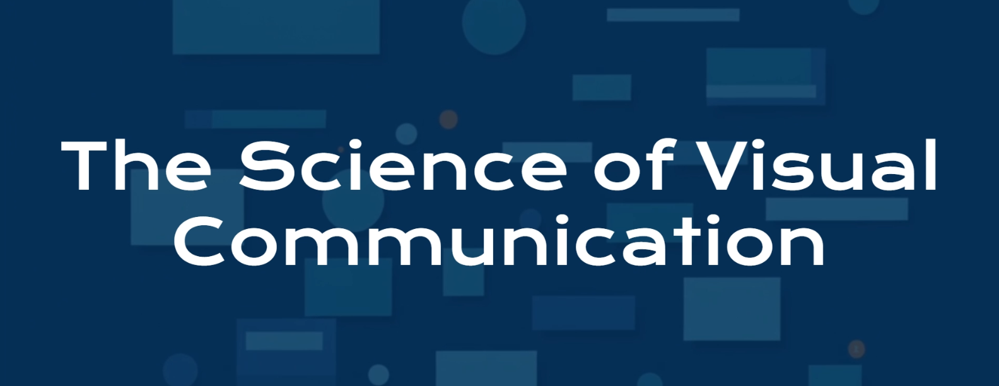

Academic Project · Digital Animation
Digital Animation
This project explored AI-assisted animation and the use of visual attention in instructional design. The assignment focused on creating an educational animation while considering how visual elements, movement, and design choices affect the viewer's ability to process information.

My AI Animation
I used Google Flow with OmniFlash to generate The Science of Visual Attention in two parts. I included most of my instructions in the initial prompt to conserve generation credits, which left little room for revisions. Even with specific directions to keep the animation minimal, the AI added decorative lines and dots that distracted from the content.
After running out of credits, I made the remaining adjustments in Clipchamp. I covered a misplaced orange circle with rectangular shapes and added a call-to-action button, timing both elements to coordinate with the existing animation and music.
Watch The Science of Visual AttentionReflection
This was probably the most frustrating project in the course for me. Unlike the previous assignments, this project required an AI-generated animation rather than both a traditional and AI version. I missed having a traditional version to compare and felt that the final product was less representative of my own skills.
I tried several AI applications, including Adobe Firefly, OmniFlash, and Veo. AI tools were faster at generating video, but I found them much less predictable. Some produced little more than still images with movement, while others generated more complete videos but offered limited control. I also encountered misspelled text, incorrectly rendered elements, and unnecessary visual details. I spent hours refining prompts and generating new versions, often trading one set of problems for another. The AI repeatedly added details I had specifically asked it to avoid, which was especially frustrating given the coherence principle and the importance of reducing unnecessary visual noise in instructional materials.
For comparison, I selected Adobe Animate as the tool to compare against, though actually making the animation wasn't part of the assignment. Theoretically, Adobe Animate's timeline, layers, keyframes, motion tweens, and motion paths provide precise control over individual elements and their movement. I was particularly interested in learning Animate because I already use other Adobe applications, including Illustrator and Photoshop. Although the assignment focused on AI animation, the experience made me more interested in developing traditional animation skills. I would have preferred learning a tool that gives me greater control over timing, movement, and visual elements, and that I could continue using in future projects. AI video generation has potential, but I found its current limitations difficult to work around.